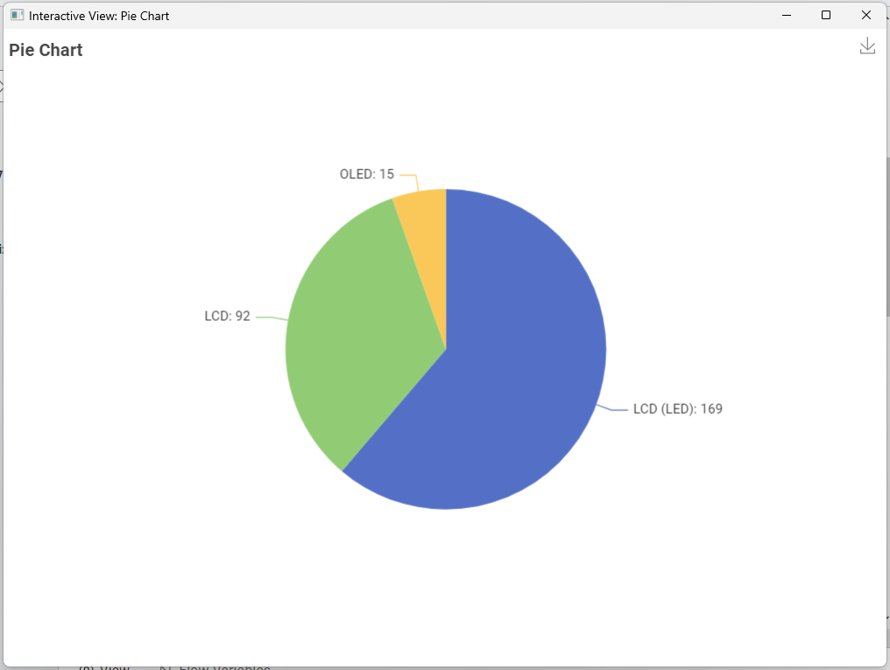
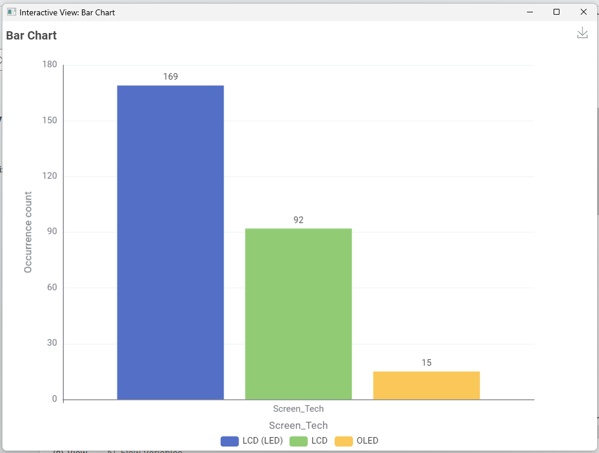
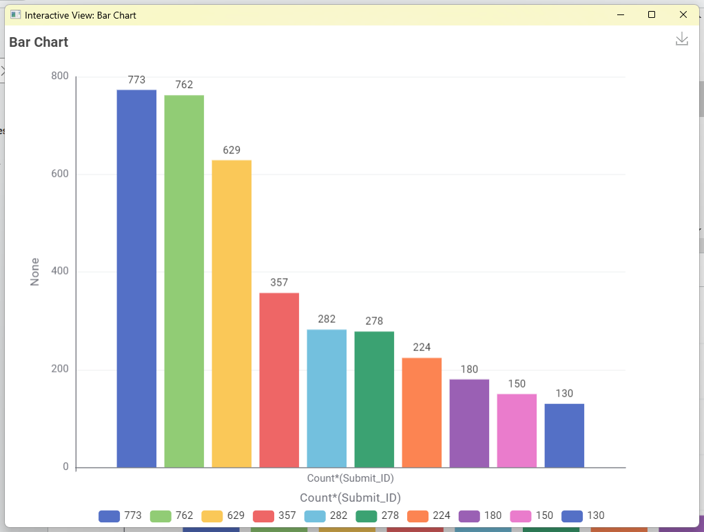
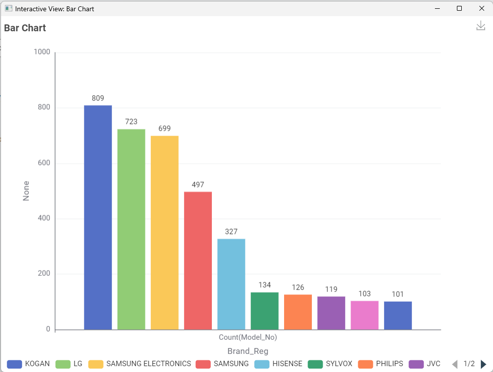
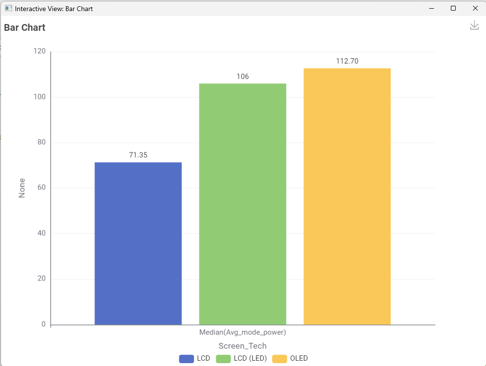
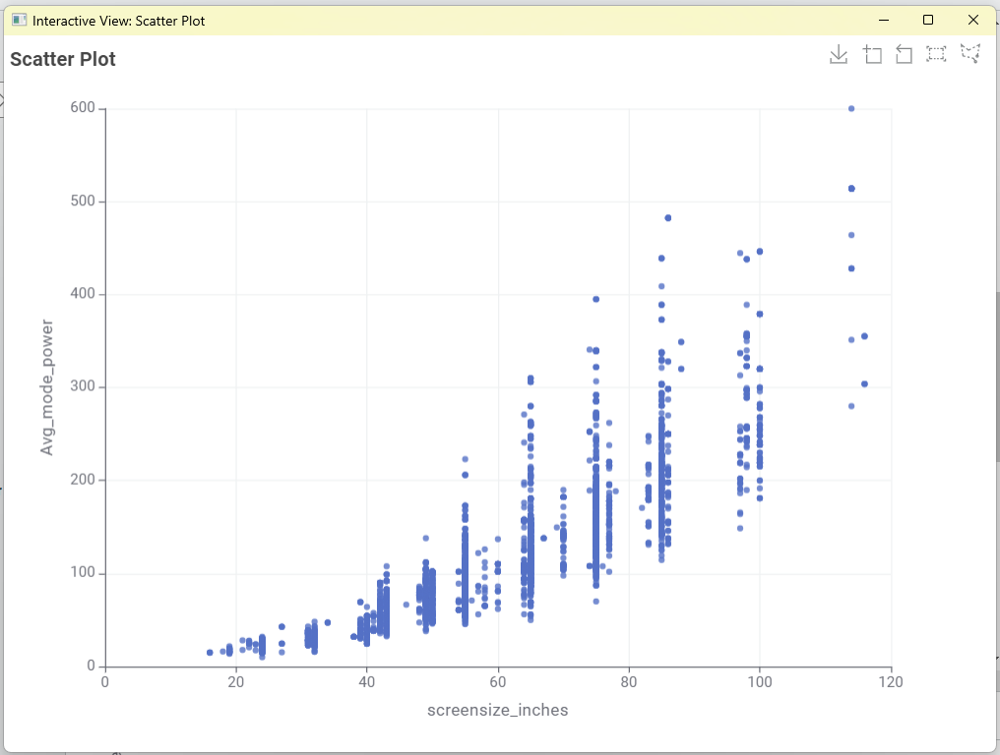
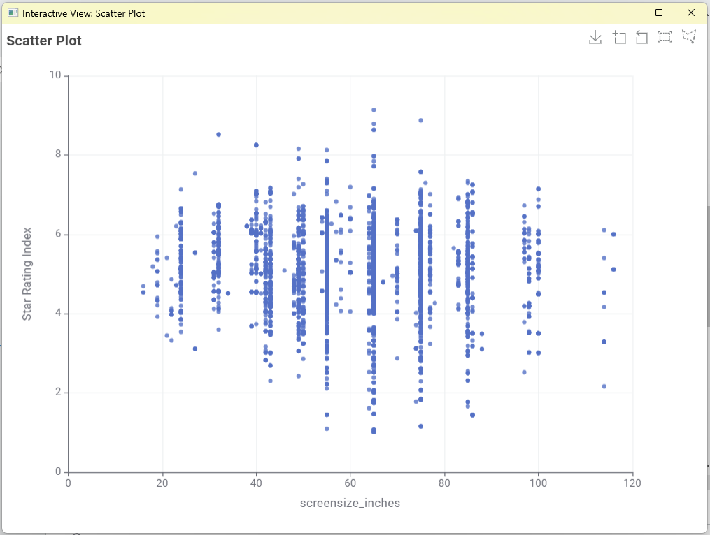

Televisions & Energy Use
Televisions are one of the most common entertainment appliances in Australian homes, and screen size, display technology (LED, OLED, QLED) and usage hours all affect annual energy consumption. This page is a placeholder for data and visualisations comparing television energy use in the Australian market.
Questions to Investigate
The following questions guide the data analysis and visualisations for this section:
1. What type of TV screen technologies are currently available in Australia and which are the most frequent?


Answer: LCD (LED) is the most common TV screen technology, with 169 occurrences, making up the largest portion of the market represented in the charts.
2. What screen sizes are available and which are most frequent?

Answer: Based on the data, a wide range of TV screen sizes is available in Australia, including
16", 18", 19", 21", 22", 23", 24", 27", 31", 32", 34", 38", 39", 40", 41", 42", 43", 46", 48", 49",
50", 54", 55", 56", 57", 58", 60", 64", 65", 67", 69", 70", 74", 75", 76", 77", 78", 82", 83", 85",
86", 88", 97", 98", 100", 114", and 116 inches.
The 65-inch TV is the most frequently available screen size, with 773 occurrences,
followed closely by the 55-inch TV with 762 occurrences. Other commonly available sizes
include 75 inches (629 occurrences) and 85 inches (357 occurrences).
Conclusion: The Australian TV market is dominated by larger screen sizes, particularly 55-inch,
65-inch, and 75-inch televisions, indicating strong consumer preference for large-screen TVs.
3. Which brands have the greatest number of different models?

Answer: Based on the visualisation, Kogan has the greatest number of different TV models available, with 809 models. This is followed by LG with 723 models and Samsung Electronics with 699 models. Other brands with notable model ranges include Samsung (497 models) and Hisense (327 models).
4. Which type of screen technology consumes the least amount of power?

Answer: Based on the visualisation, LCD technology consumes the least amount of power, with a median average power consumption of approximately 71.35 W. In comparison, LCD (LED) screens consume about 106 W, while OLED screens have the highest median power consumption at 112.70 W.
5. What is the relationship between screen size and power use?

Answer: Based on the scatter plot, there is a positive relationship between screen size and power consumption.
As the screen size increases, the average power usage generally increases as well.
Smaller televisions (around 20–40 inches) tend to consume relatively low amounts of power,
whereas larger televisions (60 inches and above) show substantially higher power consumption.
The highest power usage values are observed among the largest screen sizes, particularly those above 80 inches.
In conclusion, there is a moderate to strong positive correlation between screen size and power use.
Larger TVs generally require more power to operate, indicating that power consumption increases as screen size increases.
6. What is the relationship between star rating and screen size?

Answer: Based on the scatter plot, there does not appear to be a strong relationship between screen size and star rating.
For most screen sizes, the star ratings are spread across a wide range, typically between 3 and 7 stars.
Both small and large TVs can have either high or low star ratings,
and there is no clear upward or downward trend as screen size increases. While some larger TVs achieve high star ratings,
similar ratings are also found among smaller and medium-sized TVs.
In conclusion, the scatter plot suggests little to no significant correlation between screen size and star rating.
Screen size alone does not appear to determine a TV's star rating, indicating that other factors such as
energy efficiency, technology, and design may have a greater influence on the rating.
7. Are there differences in power consumption between brands?
8. Other questions that could be investigated with this data set, e.g.:
- Has average power consumption per screen size changed over recent model years?
- Is there a relationship between star rating and brand?
- Do higher-priced models tend to be more or less energy efficient?